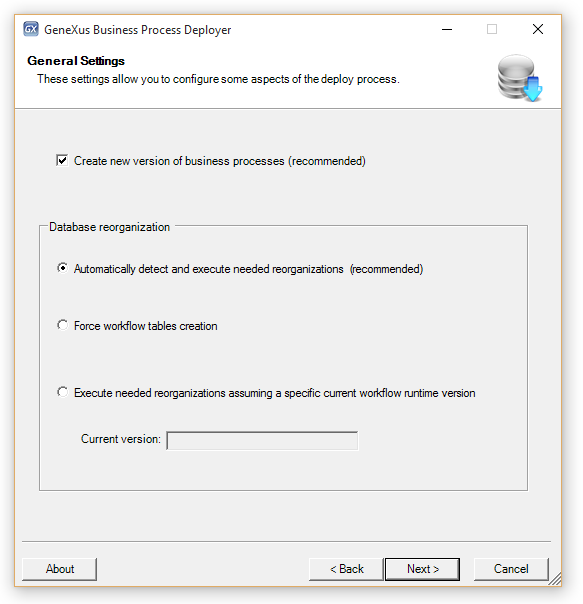
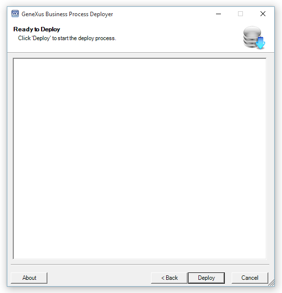
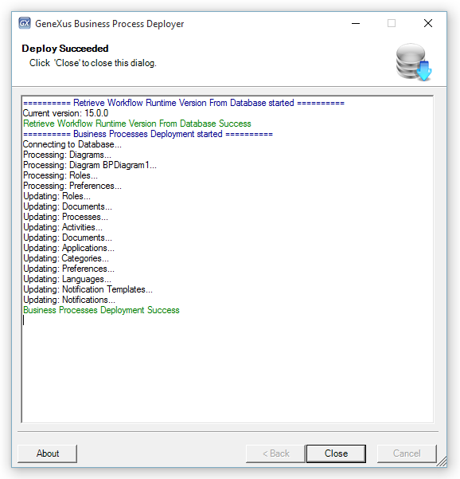

This tool helps the developers to deploy their Business Process Diagram object, and consequently, impact the production database. Steps1) Export from the Genexus IDE your Business Process Diagrams. To do this go to Tools/Workflow/Create business process deploy file. 2) Once the diagrams had been exported you need to run the Business Process Deployer — contained in GXflow Production Environment setup. 3) Then you have to go to Start/Programs/GXflowX/Business Process Deployer and the following sequence of wizards will appear.

 Note: When your file is for a .NET or .NET Core environment, the Execution section won't appear and is available a "Use Windows NT integrated security" option to authenticate to the database.
 See AlsoHowTo: Deploying a Workflow-based Application |